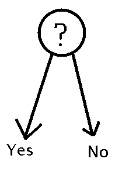
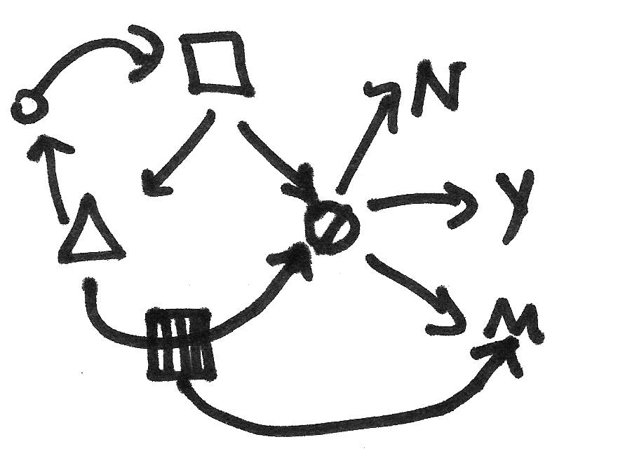

How People interact with Information, some theories
How are human information behavior (HIB) theories and models relevant to you if you're in the web development, IA and UX fields? Read these summaries of and reflections on chapters 6 and 7 in Donald Case's book on "Looking for information".
Key Ideas
- Zipf's principle of least effort (PLE): people will minimize the effort required to obtain information, even it it means accepting a lower quality or quantity of information (all we want is sufficient, pertinent information). Hence the widespread use of Wikipedia, because it works well enough.
- Task complexity: Similarly, how complicated a task seems may determine whether people will even attempt it. We prefer SIMPLE & EASY.
 Vs.
 - Everyday life influences: There are life factors outside of work that influence our use and preference for web sites. Such factors include salience, beliefs, or the desire to avoid certain information that conflicts with these. I.E. Know your users.
- Content is king: users care about the content, not its container. They want to learn or do something specific.
- Play & entertainment theory: Sometimes people use information for fun or entertainment; it's important to know how people are using your web site.
Chapter 6: Models of HIB
In Table 6.1 on page 139, Case surveys the following HIB models, describing what is most important or distinctive about each model:

- Wilson
- Krikelas
- Leckie
- Bystrom & Jarvelin
- Savolainen
- Johnson
In addition to Table 6.1, this chapter presents a picture for each model that visualizes the theories of that author.
Review:
The
It must also be noted that this chapter intentionally does not cover Ellis' models, as they are not considered general enough. Next, I want to highlight the parts that are particularly distinctive or relevant about each of the models.
Wilson
His first model highlights people as an important source of information, through "information transfer" or exchange with others. This applies, interestingly, to the "friends and neighbors" theory in political science which argues that people ask friends for voting advice, rather than doing indepth research on candidates.
Wilson's later, more-detailed and more-contextual model makes intriguing use of three other theories from business, marketing, and psychology. First, he uses psychology's stress/coping theory to explain why some needs are more likely to motivate information seeking. Next, he uses consumer research's risk/reward theory to explain why some sources get more use than others. Finally, he uses's psychology's social learning theory to explain why people may or may not successfully achieve a search goal, based on perceptions of their own effectiveness.
In addition, his second model recognizes different types of searching: passive attention, passive search, active search, and ongoing search. This may correlate interestingly with some of Kellar, Watters, & Shepherd's categories for web information tasks.
Krikelas
Uncertainty is a motivator in seeking information. For more on the important place of motivation in the psychology of web design, see Stephen Anderson's presentation on Seductive Interactions.
Also, an important source for information giving is memory, either one's own or another person's. Sometimes, we gather information but don't use it immediately, just storing it in our memory - or on a blog. :)
Leckie
The roles and tasks we have at work are often motivators for seeking information. Okay, a bit of a "Duh!" model. But the pointing finger towards Task Analysis is helpful.
Bystrom & Jarvelin
The importance of task complexity (how complicated it seems) in our seeking behavior. Often we evaluate results based on whether they are sufficient and pertinent - NOT on whether they are perfect. Usually, our evaluation falls under 1 of 3 categories:
- this search is done,
- this search is impossible, or
- I need to keep searching.
Although Case doesn't mention it, the concept of satisficing seems to apply here, as does the Principle of Least Effort (see chapter 7 below). It also brings to mind Krug's first principle of usability: "Don't make me think!"
Savolainen
Life factors outside of work that influence source use and preference. The goal here is to keep order in or make sense of our lives. Interestingly, Savolainen presents his model as concepts to be used and explored in an indepth interview. Perhaps Indi Young's mental models and focus group methodology apply here.
Johnson
Lists a number of factors that motivate someone to seek information, the most interesting of which are "personal relevance." Both salience and beliefs shape and limit our searches. He makes an important distinction between ignorance, which may not motivate a search, and ignoring (where you know there's a problem, but choose not to address it).
In discussing factors about information carriers (what LIS students might call sources and marketers might call media channels), Johnson reiterates the now-common "Content is King" mantra that users care about the content, not its container. He also notes a strong preference for other people as a primary source of information. I wonder if this is because it's a lot easier to just ask someone than to do research. After all, you know how much you trust people, whereas websites have a bit of an iffy reputation.
Chapter 7: Perspectives, Paradigms, and Theories
Case distinguishes between paradigms and theories. He notes that information seeking theories are based in a number of different disciplines, including: sociological, mass communication, psychological/cognitive; business (consumer research); economics; and linguistics. One noted researcher native to the HIB field is Elfreda Chatman.
For the rest of the chapter, Case outlines five main paradigms:
- Zipf's principle of least effort (PLE)
- Uses and Gratifications
- Sense-Making
- Constructionism, such as everyday life information seeking
- Play Theory and Entertainment Theory
Case concludes with a table on page 165-166 outlining frequently-cited social and psychological theorists. For further reading on information behavior theorists, see: Theories of Information Behavior (2005) edited by Karen E. Fisher, Sanda Erdelez, & Lynne (E. F.) McKechnie. Hamid R. Jamali has written an excellent review of this book.
Review
I'm going to focus on only two of these paradigms: play theory and PLE.
Play and Entertainment Theory
This is a subset of ways to which Uses and Gratification theory suggests audiences employ media/information to meet emotional needs. A lot of recent talk about using games to elicit design requirements leverages this insight to make elicitation meetings fun (and, therefore, well-attended).
Principle of Least Effort (PLE)
I must admit, though, that my favorite paradigm is PLE. Along the lines of usability guru, Steve Krug, I would argue that a huge thought bubble above most web surfers' heads reads "Don't Make Me Think!"
In our capitalist country, another way to frame the PLE principle is in terms of cost-benefit analysis. Users often don't think the benefits of their investing time and effort are worth the results, so we shouldn't be adding to their costs (hard to use, takes a lot of time or typing, etc.)
A related heuristic is the Pareto principle, or 80/20 rule, sometimes referred to in powerpoint presentations as the "Long Tail" or "Low-Hanging Fruit" or "Best Bets". The idea is that a majority of the content used (80%) is only a small portion (20%) of the total content. As an UX or IA professional, it usually pays to focus on that 20%. One can always approach the remaining 80% of the content after dealing with the high-priority content first. And, who knows, a lot of that 80% might end up being ROT (redundant, outdated, trivial) content that you can have removed, like the fungus that it is!
Bibliography
Case, D. (2008). Looking for information: a survey of research on information seeking, needs, and behaviors, 2nd Edition. Emerald Group Publishing Limited. ISBN: 978-0123694300.
Comments
Frank Bergmeister
Research
Adelle,
Really like your website.
Beginning to do my doctorate in Higher Education @ George Mason and would like to do research on how military men and women transfer their GI Bill to their spouse and/or children.
Would like to do a qualitative case study as I have access to interviewing military women and men at Quantico Marine Corps Base.
Came across your site because I have discovered the term, "everyday life information seeking" and was data mining for more information.
Do not have any background in library science.
Thank you for being approachable on this subject.
Cheers,
Frank
Adelle Frank
Everyday Life Information Seeking Resources
Hello, Frank:
It sounds like a fascinating topic!
In addition to looking for works by the originator of the idea (Savolainen), you might also consider these resources:
Hope these help,
Adelle